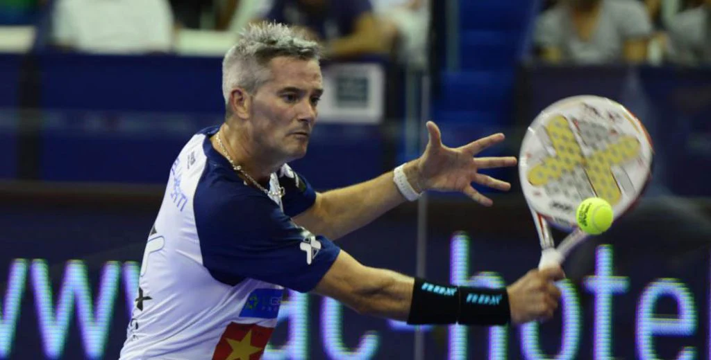

🏠 Home
Forehand Technique🎾
Tips for a Better Forehand:
- Watch a video tutorial on forehand technique▶️
- Keep your wrist firm and use your body to generate power.
- Practice hitting forehands from different positions on the court.
- Focus on consistency and placement rather than just power.
- Incorporate forehand drills into your regular practice sessions.
